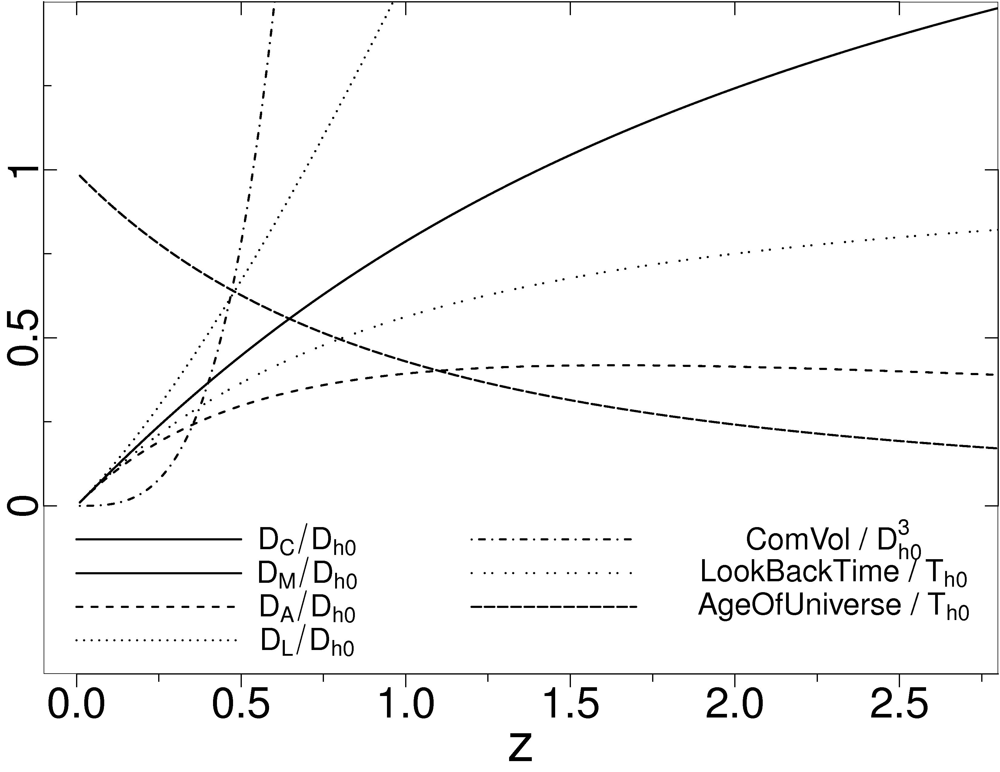

Examples of CLR Functions
The complete list of functions in CfunBASE's Application Programming Interface (API) can be found here.
Details on the implementation can be found in the CfunBASE paper.
The cosmological functions and basic statistical and exploratory data analysis functions can be uploaded into an MS-SQL Server database by means of CLR integration, and executed as simple T-SQL commmands.
The database uploading scripts are divided into 2 kinds, depending whether they contain functions with free or fixed cosmological parameters.
The names of the functions with fixed cosmological parameters start with "fCosmf", and are detemined by the following parameter vaues (at redshift=0) for a flat universe:
- OmegaLambda = 0.726
- OmegaCurvature = 0.0
- OmegaRadiation = 1e-4
- OmegaMatter = 1- OmegaLambda - OmegaCurvature - OmegaRadiation = 0.2739
- HubbleConstant = 70.5 km/s/Mpc
- w_0 = -1 (dark energy state equation)
Reference: Komatsu et al. (2009) ApJS 180:330-376
On the other hand, the names of the free cosmological parameters functions strat with "fCosmo", and the T-SQL functions declaration is identical to the fixed case, with the exception of the addition of the
following parameters with default values equal to the ones in the fixed case:
...,@OmegaM float=0.2739, @OmegaL float=0.726, @OmegaR float=1e-4, @w_0 float=-1, @h_0 float=0.705)
Follow these links for the T-SQL declaration, descriptions and simple examples of the cosmological and mathematical functions:

Normalized cosmological functions in the redshift interval [0,2.75], obtained from executing the functions
fCosmfQuantities,fCosmfHubbleDistance and fCosmfHubbleTime.
.
Refer to the CfunBASE paper for more details.
fCosmfDl( @z )
Returns the luminosity distance [Mpc] at a given redshift.
Parameters:
@z float: redshift
returns Dl float: luminosity distance in Mpc.
select dbo.fCosmfDl(0.1)
returns 457.924826431644
see also fCosmfZfromDl
fCosmfDcInterval( @Zmin float, @Zmax )
Returns the line of sight comoving distance [Mpc] comprehended in the redshift interval [@Zmin,@Zmax].
Parameters:
@Zmin float: lower bound of the redshift interval
@Zmax float: upper bound of the redshift interval
returns DcInterval float: line of sight comoving distance in Mpc.
select dbo.fCosmfDcInterval(0,0.1)
returns 416.29529675604
see also fCosmfZfromDc,fCosmfDc
fCosmfDc( @z )
Returns the line of sight comoving distance [Mpc] at a given redshift.
Parameters:
@z float: redshift
returns Dc float: line of sight comoving distance in Mpc.
select dbo.fCosmfDc(0.1)
returns 416.29529675604
see also fCosmfZfromDc,fCosmfDcInterval
fCosmfDa( @z )
Returns the angular diameter distance [Mpc] at a given redshift.
Parameters:
@z float: redshift
returns Da float: angular diameter distance in Mpc.
select dbo.fCosmfDa(0.1);select dbo.fCosmfDa(29.7570891825681)
return 378.450269778218 and 378.450269778217
see also fCosmfZfromDa
fCosmfDm( @z )
Returns the transverse comoving distance [Mpc] at a given redshift.
Parameters:
@z float: redshift
returns Dm float: transverse comoving distance in Mpc.
select dbo.fCosmfDm(0.1)
returns 416.29529675604
see also fCosmfZfromDm
fCosmfComovDist2Objects( @Redshift1 float, @Redshift2 float, @AngularSeparation )
Returns the comoving distance [Mpc] between 2 objects at different redshifts and locations in the sphere.
Parameters:
@Redshift1 float: redshift of object 1.
@Redshift2 float: redshift of object 2.
@AngularSeparation float: angular separation (in radians) between the 2 objects.
returns ComovDist float: comoving distance between the two objects in Mpc.
select dbo.fCosmfComovDist2Objects(0.1,0.1,dbo.fMathAngSepXYZ(1,0,0,-1,0,0))
returns 832.590593512079
see also fCosmfZfromDc, fMathAngSepXYZ, fMathAngSepRADEC
fMathAngSepXYZ(@x1 float, @y1 float, @z1 float, @x2 float, @y2 float, @z2 )
Returns the angular separation (in radians) between 2 points in Cartesian coordinates.
Parameters:
@x1 float: x-coordinate of point 1.
@y1 float: y-coordinate of point 1.
@z1 float: z-coordinate of point 1.
@x2 float: x-coordinate of point 2.
@y2 float: y-coordinate of point 2.
@z2 float: z-coordinate of point 2.
returns AngularSeparation float: angular separation (in radians) between the two points.
select dbo.fMathAngSepXYZ(1,0,0,-1,0,0)
returns 3.14159265358979
see also fMathAngSepRADEC
fMathAngSepRADEC(@Ra1 float, @Dec1 float, @Ra2 float, @Dec2 )
Returns the angular separation (in radians) between 2 points in Equatorial coordinates.
Parameters:
@Ra1 float: right ascension of point 1 in degrees.
@Dec1 float: declination of point 1 in degrees.
@Ra2 float: right ascension of point 2 in degrees.
@Dec2 float: declination of point 2 in degrees.
returns AngularSeparation float: angular separation (in radians) between the two points.
select dbo.fMathAngSepRADEC(0,0,0,180)
returns 3.14159265358979
see also fMathAngSepXYZ
fCosmfComovingVolume( @z )
Returns the comoving volume [Mpc^3] between here and a given redshift.
Parameters:
@z float: redshift
returns ComoVingVolume float: Comoving Volume in Mpc^3.
select dbo.fCosmfComovingVolume(0.1)
returns 302199069.142958
see also fCosmfComovVolumeFromDl
fCosmfLookBackTime( @z )
Returns the time interval [Gyr] between the present time and a particular redshift.
Parameters:
@z float: redshift
returns LookBackTime float: look back time in Gyr.
select dbo.fCosmfLookBackTime(0.1)
returns 1.29457139146011
see also fCosmfAgeOfUniverse and fCosmfTimeInterval
fCosmfAgeOfUniverse( @z )
Returns the time interval [Gyr] between a particular redshift and the beginning of the universe.
Reference:
Komatsu et al. (2009) ApJS 180:330-376
Parameters:
@z float: redshift
returns AgeOfUniverse float: age of the universe in Gyr.
select dbo.fCosmfAgeOfUniverse(0.1)
returns 12.4125088821662
see also fCosmfLookBackTime and fCosmfTimeInterval
fCosmfTimeInterval( @zMin float, @zMax )
Returns the time interval [Gyr] between redshifts zMin and zMax.
Parameters:
@zMin float: redshift
@zMax float: redshift
returns TimeInterval float: time interval in Gyr.
select dbo.fCosmfTimeInterval(0.1,5)
returns 11.2165195832486
see also fCosmfLookBackTime and fCosmfAgeOfUniverse
fCosmfHubbleDistance(@z )
Returns the Hubble Distance [Mpc] at a particular redshift.
Parameters:
@z float: redshift
returns HubbleDistance float: hubble distance in Mpc.
select dbo.fCosmfHubbleDistance(0)
returns 4252.37529078014
fCosmfHubbleTime(@z )
Returns the Hubble Time [Gyr] at a particular redshift.
Parameters:
@z float: redshift
returns HubbleTime float: hubble time in Gyr.
select dbo.fCosmfHubbleTime(0)
returns 13.8697014395366
fCosmfZfromTh( @HubbleTime )
Returns the redshift at a given hubble time [Gyr].
Parameters:
@HubbleTime float: Hubble time in Gyr.
returns redshift float
select dbo.fCosmfZfromTh(dbo.fCosmfHubbleTime(0.1))
returns 0.0999999999999993
see also fCosmfHubbleTime
fCosmfZfromDh( @HubbleDistance )
Returns the redshift at a given hubble distance [Mpc].
Parameters:
@HubbleDistance float: Hubble distance in Mpc.
returns redshift float
select dbo.fCosmfZfromDh(dbo.fCosmfHubbleDistance(0.1))
returns 0.0999999999999994
see also fCosmfHubbleDistance
fCosmfZfromComovVolume( @ComovVolume )
Returns the redshift at a given comoving volume [Mpc^3].
Parameters:
@ComovVolume float: Comoving volume in Mpc^3.
returns redshift float
select dbo.fCosmfZfromComovVolume(dbo.fCosmfComovingVolume(0.1))
returns 0.1
see also fCosmfComovingVolume, fCosmfDl and fCosmfComovVolumeFromDl
fCosmfComovVolumeFromDl( @LumDistance )
Returns the comoving volume at a given luminosity distance [Mpc].
Parameters:
@LumDistance float: Luminosity distance in Mpc.
returns ComovVolume float
select dbo.fCosmfZfromComovVolume(dbo.fCosmfComovVolumeFromDl(dbo.fCosmfDl(0.1)))
returns 0.1
see also fCosmfComovingVolume, fCosmfDl and fCosmfZfromComovVolume
fCosmfZfromDl( @LuminosityDistance )
Returns the redshift at a given luminosity distance [Mpc].
Parameters:
@LuminosityDistance float: luminosity distance in Mpc.
returns redshift float
select dbo.fCosmfZfromDl(dbo.fCosmfDl(0.1))
returns 0.1
see also fCosmfDl
fCosmfZfromDa( @AngularDiamDist )
Returns a row with the first and second solution for the redshifts at a given angular diameter distance [Mpc].
Parameters:
@AngularDiamDist float: angular diameter distance in Mpc.
returns table (z1 float, z2 ) : one row table where z1 and z2 are the first and second solutions, and z1<=z2.
select * from dbo.fCosmfZfromDa(dbo.fCosmfDa(0.1))
returns the row 0.1 29.7570891825681
see also fCosmfDa
fCosmfZfromDm( @ComovDistTransverse )
Returns the redshift for a given transverse comoving distance [Mpc].
Parameters:
@ComovDistTransverse float: transverse comoving distance in Mpc.
returns redshift float
select dbo.fCosmfZfromDm(dbo.fCosmfDm(0.1))
returns 0.1
see also fCosmfDm
fCosmfZfromDc( @ComovDistLineOfSight )
Returns the redshift at a given line of sight comoving distance [Mpc].
Parameters:
@ComovDistLineOfSight float: line of sight comoving distance in Mpc.
returns redshift float
select dbo.fCosmfZfromDc(dbo.fCosmfDc(0.1))
returns 0.1
see also fCosmfDc
fCosmfZfromAgeOfUniverse( @AgeOfUniverse )
Returns the redshift at a given age of the universe [Gyr].
Parameters:
@AgeOfUniverse float: Age of the universe in Gyr.
returns redshift float
select dbo.fCosmfZfromAgeOfUniverse(dbo.fCosmfAgeOfUniverse(0.1))
returns 0.1
see also fCosmfZfromLookBackTime,fCosmfAgeOfUniverse
fCosmfZfromLookBackTime( @LookBackTime )
Returns the redshift at a given look back time [Gyr].
Parameters:
@LookBackTime float: look back time in Gyr.
returns redshift float
select dbo.fCosmfZfromLookBackTime(dbo.fCosmfLookBackTime(0.1))
returns 0.1
see also fCosmfZfromAgeOfUniverse,fCosmfLookBackTime
fCosmfAbsMag( @m float, @z )
Returns the absolute magnitude of a galaxy at a particular redshift.
Parameters:
@m float: apparent magnitude of the object
@z float: redshift
returns AbsMag: absolute magnitude
select dbo.fCosmfAbsMag(17.5,0.1)
returns -20.8039709473829
see also fCosmfDistanceModulus
fCosmfDistanceModulus( @z )
Returns the distance modulus at a particular redshift.
Parameters:
@z float: redshift
returns DistanceModulus: distance modulus
select dbo.fCosmfDistanceModulus(0.1)
returns 38.3039709473829
see also fCosmfAbsMag
fCosmfQuantities(@zMin float, @zMax float, @NumBin int)
Returns a table with the midpoints values of a grid of redshifts, together with their corresponding values
of the cosmological distances, comoving volume and time intervals.
Parameters:
@zMin float: redshift lower bound
@zMax float: redshift upper bound
@NumBin int: number of bins, at whose boundaries all the values are evaluated. Number of rows returned = @NumBin + 1.
returns table (z float, Dc float, Dm float, Da float, Dl float, ComVol float, LookBackTime float, AgeOfUniverse ) where
z: redshift
Dc: line of sight comoving distance in Mpc.
Dm: transverse comoving distance in Mpc.
Da: angular diameter distance in Mpc.
Dl: luminosity distance in Mpc.
ComVol: comoving volume in MPc^3.
LookBackTime: look back time at z in Gyr.
AgeOfUniverse: age of the universe at z in Gyr.
select * from dbo.fCosmfQuantities(0,5,1000)
fMathGrid(@x1 float, @x2 float , @NumBin int, @IsLinearScale bit, @IsMidPoints bit)
Returns a column containing the tick marks (either interval boundaries or midpoints) that define
a grid of @NumBin bins in the interval [@x1,@x2]. The scale is either linear or logarithmic.
Parameters:
@x1 float: lower bound of the interval.
@x2 float: upper bound of the interval.
@NumBin int: number of bins in which the interval is partitioned.
@IsLinearScale bit: True if the tick marks (or midpoints) are equally separated in linear scale,
false if they are equally separated in logarithmic (base 10) scale .
@IsMidPoints bit: False if the tick marks that define the boundaries of the bins are returned.
True if the midpoints of the bins are returned.
returns table (TickMark float): the tick marks that define the boundaries of the bins. There are @NumBin+1 tick marks
select TickMark from dbo.fMathGrid(0,10,10,1,0) ; select TickMark,LOG10(TickMark) from dbo.fMathGrid(1,1e10,10,0,0)
see also spMathHistogramNDim,fMathBin
fMathBin(@x float, @x1 float, @x2 float , @NumBin int, @HasOpenUpperBound bit, @IsLinearScale bit)
Returns the bin's center where @x falls in, given a grid of @NumBin bins in the interval [@x1,@x2].
The scale is either linear or logarithmic. Each bin can have open (or closed) upper (or lower) bounds.
Parameters:
@x float: value.
@x1 float: lower bound of the interval.
@x2 float: upper bound of the interval.
@NumBin int: number of bins in which the inteval is partitioned.
@HasOpenUpperBound bit: true if the bins have open upper bounds (and closed lower bounds);
false if the bins have open lower bounds (and closed upper bounds).
returns BinCenter float: the center of the bin, where @x falls in.
select TickMark,dbo.fMathBin(TickMark,0,10,10,0,1) as MidPoint from dbo.fMathGrid(0,10,10,1,0)
see also spMathHistogramNDim,fMathGrid
fMathRound(@x float, @SigDigits int)
Rounds a value up to the first @SigDigits significant digits.
Parameters:
@x float: value.
@SigDigits int: number of significant digits.
returns value float: the initial @value rounded to @SigDigits significant digits.
select round(100.8888888,4),dbo.fMathRound(100.8888888,4)
returns 100.8889000 100.9
see also round() from T-SQL
aMathCDF(@AggregatedValues float, @Value float)
Aggregate function that returns the cumulative distribution function (CDF) at a @value,
given a column of values @AggregatedValues. If the value is not in the column of values,
linear interpolation is performed.
Parameters:
@AggregatedValues float: column of values on which the aggregation takes place.
@Value float: value at which the CDF is evaluated.
returns CDF float: the value of the CDF evaluated at @Value.
select dbo.aMathCDF(a.tickmark,5) as CDF from dbo.fMathGrid(1,10,9,1,0) as a
returns 0.5
see also aMathQuantile,fMathCDF,fMathQuantile
aMathQuantile(@AggregatedValues float, @CDFvalue float)
Aggregate function that returns the inverse of the cumulative distribution function (CDF),
also called Quantile Function; evaluated at a value of the CDF @CDFvalue in the interval [0,1].
The aggregate works on a column of values @AggregatedValues, on which linear interpolation is performed.
Parameters:
@AggregatedValues float: column of values on which the aggragation takes place.
@CDFvalue float: value of the CDF in the interval [0,1].
returns QuantileValue float: quantile function value (linearly interpolated between the column values)
select dbo.aMathQuantile(a.tickmark,0.5) as Median from dbo.fMathGrid(1,10,9,1,0) as a
returns 5
see also aMathCDF,fMathQuantile,fMathCDF
fMathCDF(@Query nvarchar(256), @Value float)
Returns the cumulative distribution function (CDF) at a value @Value, given a column of values
returned by a user defined query @Query. If the value is not in the column of values, linear interpolation is performed.
Parameters:
@Query nvarchar(256): a select statement that returns one column of values. The column must be named 'col'.
Maximum number of rows returned = 1e7
@Variable float: variable's value, at which one wants to calculate the corresponding Quantile.
returns CDF float: the value of the CDF evaluated at @Value.
select dbo.fMathCDF('select TickMark as col from dbo.fMathGrid(1,10,9,1,0)', 5) as CDF
returns 0.5
see also aMathCDF,aMathQuantile,fMathQuantile
fMathQuantile(@Query nvarchar(256), @CDFvalue float)
Returns the inverse of the cumulative distribution function (CDF), also called Quantile Function;
evaluated at a value @CDFvalue of the CDF in the interval [0,1]. The functions works on a column of values
returned by a user defined query @Query. Linear interpolation between the column values is performed.
Parameters:
@Query nvarchar(256): a select statement that returns one column of values. The column must be named 'col'.
Maximum number of rows returned = 1e7
@CDFvalue float: value of the CDF in the interval [0,1].
returns QuantileValue float: quantile function value (linearly interpolated between the column values)
select dbo.fMathQuantile('select TickMark as col from dbo.fMathGrid(1,10,9,1,0)',0.5) as Median
returns 5
see also aMathCDF,aMathQuantile,fMathCDF
spMathHistogramNDim(@Query nvarchar(512), @Dimension int,
@String_X1 nvarchar(256), @String_X2 nvarchar(256), @String_NumCell nvarchar(256), @HasOpenUpperBound bit)
Returns an N-dimensional histogram (with optional weighting) of N-dimensional data points returned by a user defined select statement.
Parameters:
@Query nvarchar(512): select statement that returns N-dimensional data points, each in one row.
The number of columns should be equal to @Ndim. Optional multiplicative weights associated to the data points can also be added,
by means of an extra (@Ndim+1)'th column in the select statement.
The number of rows (i.e, N-Dimensional points) returned by @Query is forced to be less or equal than 1e7.
@NDim int: data points' number of dimensions. @NDim <= 10.
@String_X1 nvarchar(256): string composed by the lower bounds of the intervals in each dimension.
There should be @NDim comma-separated values, placed in the same order as how their corresponding dimension appears in @Query.
@String_X2 nvarchar(256): string composed by the upper bounds of the intervals in each dimension.
There should be @NDim comma-separated values, placed in the same order as how their corresponding dimension appears in @Query.
@String_NumCell nvarchar(256): string that contains the coma-separated values of the number of cells in which the intervals are divided,
placed in the same order as how their corresponding dimensions appear in @Query.
@HasOpenUpperBound bit: true (or 1) if the bins have open upper bounds (and closed lower bounds);
false (or 0) if the bins have open lower bounds (and closed upper bounds).
returns table (BinCenter_1 float, BinCenter_2 float,..., BinCenter_N float, Height float, Counts floats) where
BinCenter_1,...,BinCenter_N: The bins' centers, each one corresponding to one of the @NDim dimensions.
Height: value of the normalized N-dimensional Histogram at the bin's center.
The following applies: Sum_{over bins}[height(bin)*NDimensionalVolume(bin)] = 1
Counts: number of rows from @Query, whose values fall in the particular bin labeled by BinCenter_1,...,BinCenter_N.
declare @query nvarchar(max);
set @query='select top 10000 z, petromag_r-extinction_r from specphoto where primtarget&(64|128|256)!=0 and z between 0.05 and 0.15
and petromag_r-extinction_r between 15 and 16';
exec spMathHistogramNDim @query,2,'0.05,15','0.15,16','20,20',1
see also fMathBin,fMathGrid
fMathSafeSqlCommand(@cmd VARCHAR(8000), @limit INT = 1000)
Parses and checks the command @cmd against Sql-injection. Returns a string with a safe version of the command,
enforced to return a maximum of @limit rows.
Based on spExecuteSQL from http://casjobs.sdss.org/dr7/en/help/browser/browser.asp.
Parameters:
@cmd VARCHAR(8000): T-SQL command to be screened.
@limit INT: maximum number of rows returned by @cmd.
returns SafeCommand VARCHAR(8000): select statement safe to be executed or error message.
This functions is based on the procedure spExecuteSQL.
It parses a command given as input by the user (must be a select command)
and returns a command that is safe to be executed.
select dbo.fMathSafeSqlCommand('select z from SpecPhoto',10000)
returns 'select top 10000 z from SpecPhoto'.
fMathReplace (@oldstr VARCHAR(8000), @pattern VARCHAR(1000), @replacement VARCHAR(1000))
Case-insensitive string replacement
Used by the SQL parser stored procedures.
Identical to fReplace from http://casjobs.sdss.org/dr7/en/help/browser/browser.asp.
fMathIsNumbers(@string varchar(8000), @start int, @stop int)
Check that the substring is a valid number.
Identical to fIsNumbers from http://casjobs.sdss.org/dr7/en/help/browser/browser.asp.